# 安装包
if (!requireNamespace("ggraph", quietly = TRUE)) {
install.packages("ggraph")
}
if (!requireNamespace("igraph", quietly = TRUE)) {
install.packages("igraph")
}
if (!requireNamespace("tidyverse", quietly = TRUE)) {
install.packages("tidyverse")
}
if (!requireNamespace("collapsibleTree", quietly = TRUE)) {
install.packages("collapsibleTree")
}
if (!requireNamespace("dendextend", quietly = TRUE)) {
install.packages("dendextend")
}
# 加载包
library(ggraph)
library(igraph)
library(tidyverse)
library(collapsibleTree)
library(dendextend)树状图
树状图（Dendrogram）是展示对象之间层次关系的一种图形。它广泛应用于聚类分析，尤其是层次聚类（Hierarchical Clustering）中，用于可视化数据点之间的相似性或距离。
树状图是一个分层结构，由一系列的节点和连接它们的分支（branches）组成。每个节点代表一个数据点（或聚类），而分支的长度则表示对象之间的相似度或距离。通常，树状图从底部的单个数据点开始，逐渐合并形成大的聚类，直到所有对象合并为一个大类。分支表示两个聚类或对象的相似性，通常通过距离度量（如欧氏距离）来衡量。分支越短，表示两个对象越相似，分支越长则表示相似性较低。非叶节点是从不同数据点或聚类中生成的“合并”节点，表示它们被合并成一个更大的类。叶节点是树状图的底部节点，通常代表原始数据点（如样本、基因等）。
示例
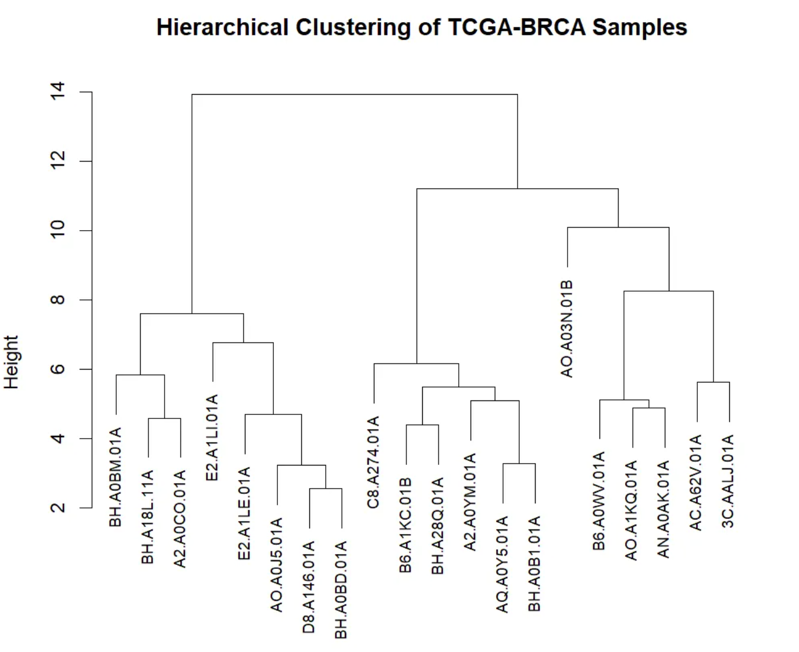
此树状图是层次聚类结果的可视化，展示了TCGA-BRCA样本之间基因表达水平的相似性和聚类结构。x轴表示不同的TCGA-BRCA样本，底部的叶节点标识了每个单独的样本。y轴表示不同样本之间的合并距离或相似度。在层次聚类中，当两个样本的相似性足够高时，它们会被合并成一个聚类。y轴的数值越大，表示这两个聚类或样本之间的相似度越低；反之，数值越小，表示它们之间的相似度越高。树状图通过分支显示样本的合并过程。每个分支代表一次合并，分支越短，表示这两个样本的相似性越高。树状图从底部开始，每个单独的样本逐步被合并，直到形成一个大聚类。在树的顶部，所有样本都被合并成一个单一的聚类。
环境配置
系统要求： 跨平台（Linux/MacOS/Windows）
编程语言：R
依赖包：
ggraph;igraph;tidyverse;collapsibleTree;dendextend
sessioninfo::session_info("attached")─ Session info ───────────────────────────────────────────────────────────────
setting value
version R version 4.6.0 (2026-04-24)
os Ubuntu 24.04.4 LTS
system x86_64, linux-gnu
ui X11
language (EN)
collate C.UTF-8
ctype C.UTF-8
tz UTC
date 2026-05-08
pandoc 3.1.3 @ /usr/bin/ (via rmarkdown)
quarto 1.9.37 @ /usr/local/bin/quarto
─ Packages ───────────────────────────────────────────────────────────────────
package * version date (UTC) lib source
collapsibleTree * 0.1.8 2023-11-13 [1] RSPM
dendextend * 1.19.1 2025-07-15 [1] RSPM
dplyr * 1.2.1 2026-04-03 [1] RSPM
forcats * 1.0.1 2025-09-25 [1] RSPM
ggplot2 * 4.0.3.9000 2026-05-04 [1] Github (tidyverse/ggplot2@6870419)
ggraph * 2.2.2 2025-08-24 [1] RSPM
igraph * 2.3.1 2026-05-04 [1] RSPM
lubridate * 1.9.5 2026-02-04 [1] RSPM
purrr * 1.2.2 2026-04-10 [1] RSPM
readr * 2.2.0 2026-02-19 [1] RSPM
stringr * 1.6.0 2025-11-04 [1] RSPM
tibble * 3.3.1 2026-01-11 [1] RSPM
tidyr * 1.3.2 2025-12-19 [1] RSPM
tidyverse * 2.0.0 2023-02-22 [1] RSPM
[1] /home/runner/work/_temp/Library
[2] /opt/R/4.6.0/lib/R/site-library
[3] /opt/R/4.6.0/lib/R/library
* ── Packages attached to the search path.
──────────────────────────────────────────────────────────────────────────────数据准备
使用R自带数据集warpbreaks，mtcars，USArrests和UCSC Xena网站(UCSC Xena (xenabrowser.net))的TCGA-BRCA.star_counts.tsv。
# warpbreaks
data("warpbreaks")
warpbreaks <- warpbreaks %>%
mutate(breaks = as.character(breaks))
# 嵌套数据框数据转为边列表数据再绘制树状图
edges_level1_2 <- warpbreaks %>%
select(wool, tension) %>%
distinct() %>%
rename(from = wool, to = tension)
edges_level2_3 <- warpbreaks %>%
select(tension, breaks) %>%
distinct() %>%
rename(from = tension, to = breaks)
edge_list <- bind_rows(edges_level1_2, edges_level2_3) # 合并
edge_list_unique <- edge_list[edge_list$from != "B",]
edge_list_unique$to <- make.unique(edge_list_unique$to)
# 创建graph对象
mygraph_unique <- graph_from_data_frame(edge_list_unique)
# 分层分组
V(mygraph_unique)$group <- case_when(
V(mygraph_unique)$name %in% unique(warpbreaks$wool) ~ "Group 1", # 根节点 wool
str_detect(V(mygraph_unique)$name, "^[LMH]") ~ "Group 2", # 第一层 tension
str_detect(V(mygraph_unique)$name, "^[0-9]") ~ "Group 3", # 第二层 breaks
TRUE ~ "Group 4" # 额外修正层
)
V(mygraph_unique)$color <- case_when(
V(mygraph_unique)$group == "Group 1" ~ "red",
V(mygraph_unique)$group == "Group 2" ~ "yellow",
V(mygraph_unique)$group == "Group 3" ~ "green",
V(mygraph_unique)$group == "Group 4" ~ "blue"
)
# mtcars
mtcars %>%
select(mpg, cyl, disp) %>%
dist() %>%
hclust() %>%
as.dendrogram() -> mtcars_dend # 使用3个变量进行聚类
# TCGA-BRCA.star_counts.tsv
data <- read.csv("https://bizard-1301043367.cos.ap-guangzhou.myqcloud.com/TCGA-BRCA.star_counts.tsv", header = TRUE, sep = "")
expression_subset <- data[1:20,2:21]
colnames(expression_subset) <- substr(colnames(data)[2:21], 6, nchar(colnames(data)[2:21]))
distance_matrix <- dist(t(expression_subset), method = "euclidean") # 计算欧几里得距离
cluster_result <- hclust(distance_matrix, method = "complete") # 使用 hclust 进行层次聚类
sample_type <- substr(colnames(expression_subset), nchar(colnames(expression_subset)), nchar(colnames(expression_subset)))
colors <- ifelse(sample_type == "A", "red", "blue")
brca_dend <- as.dendrogram(cluster_result)
brca_dend <- brca_dend %>%
color_labels(col = colors)可视化
1. 分层数据的树状图
1.1 基本绘图
分层数据集树状图是基于已知的分类结构构建的，它展示了不同层级之间的关系。例如，在一个企业组织结构中，CEO管理团队位于树的顶端，而下层员工根据不同职能或部门分布在树的不同分支上。这种树状图通过层级展示了各个群体之间的所属关系，帮助理解整体的层次结构。
ggraph(mygraph_unique, layout = 'dendrogram', circular = FALSE) +
geom_edge_diagonal() +
geom_node_point() +
theme_void()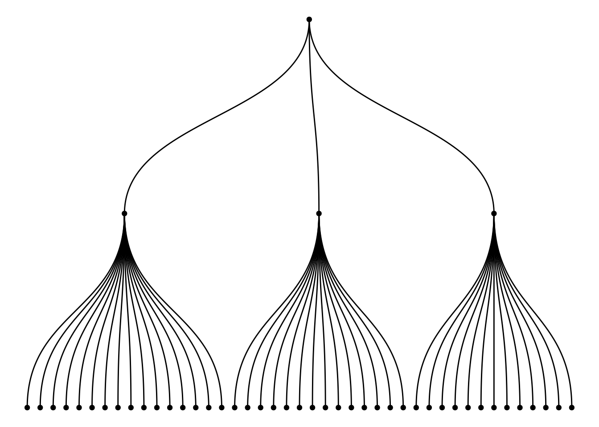
上图通过warpbreaks数据集的多个变量（wool、tension、breaks）构建的图形展示了它们之间的逐级层次关系，根节点为wool的A类别，第一层为每个wool类别下的tension（L、M、H）水平，第二层为每个tension类别下的breaks。通过树状结构，图形清晰地展示了如何从wool（织物类型）出发，逐步细化到张力（tension）的不同水平，再到断裂次数（breaks）的具体情况。
1.2 自定义树状图
使用circular = TRUE参数绘制圆形树状图。
ggraph(mygraph_unique, layout = 'dendrogram', circular = TRUE) +
geom_edge_diagonal() +
theme_void() 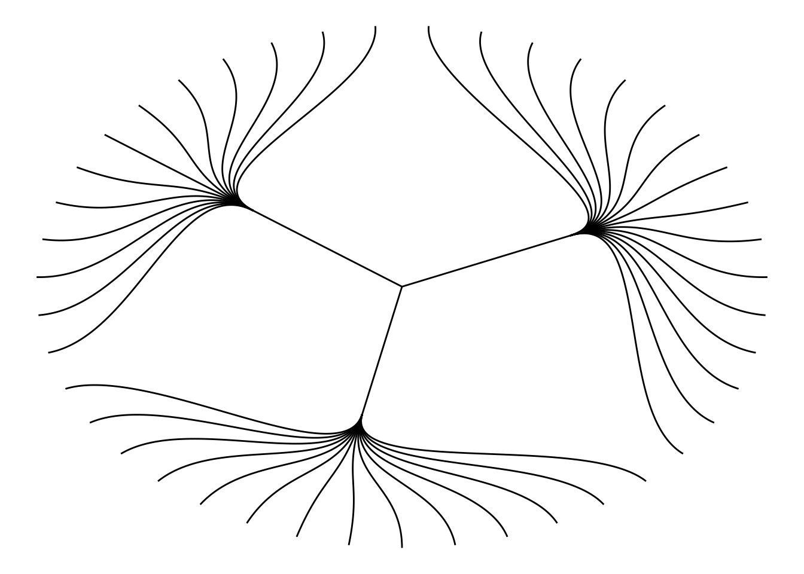
选择不同的边缘样式。ggraph包包含 2 个主要函数：geom_edge_link()和geom_edge_diagonal()。边缘样式为直线时不可见树状图最常见的“肘形”。
ggraph(mygraph_unique, layout = 'dendrogram', circular = FALSE) +
geom_edge_link() +
theme_void() 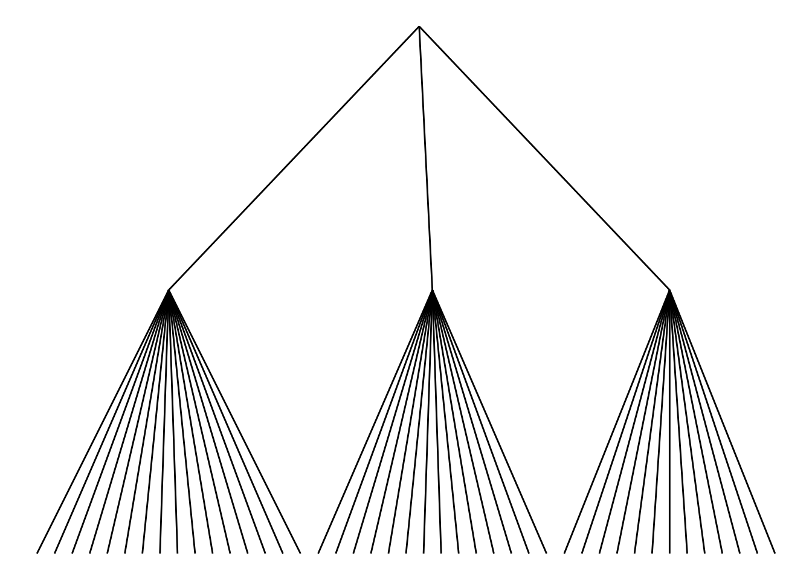
用geom_node_text和geom_node_point添加标签和节点。
ggraph(mygraph_unique, layout = 'dendrogram') +
geom_edge_diagonal() +
geom_node_text(aes(label = name, filter = leaf), angle = 90, hjust = 1, nudge_y = -0.04) +
geom_node_point(aes(filter = leaf), alpha = 0.6) +
ylim(-0.5, NA) +
theme_void()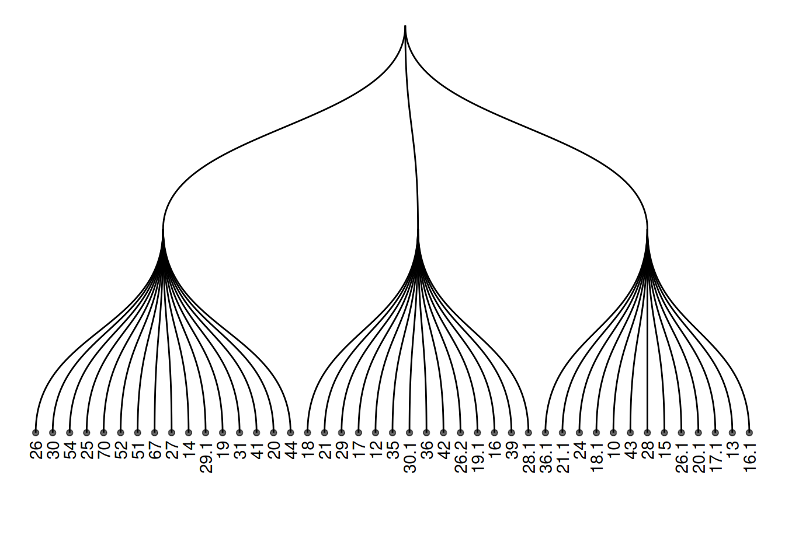
向树状图添加颜色或形状，更清楚地显示数据集的组织。ggraph的工作方式与ggplot2相同，可以使用初始数据框的一列来映射到形状、颜色、大小或其他。
ggraph(mygraph_unique, layout = 'dendrogram') +
geom_edge_diagonal() +
geom_node_text(aes(label = name, color = color, filter = leaf), angle = 90, hjust = 1, nudge_y = -0.1) +
geom_node_point(aes(color = color), alpha = 0.6) +
ylim(-0.6, NA) +
theme_void() +
theme(legend.position = "none")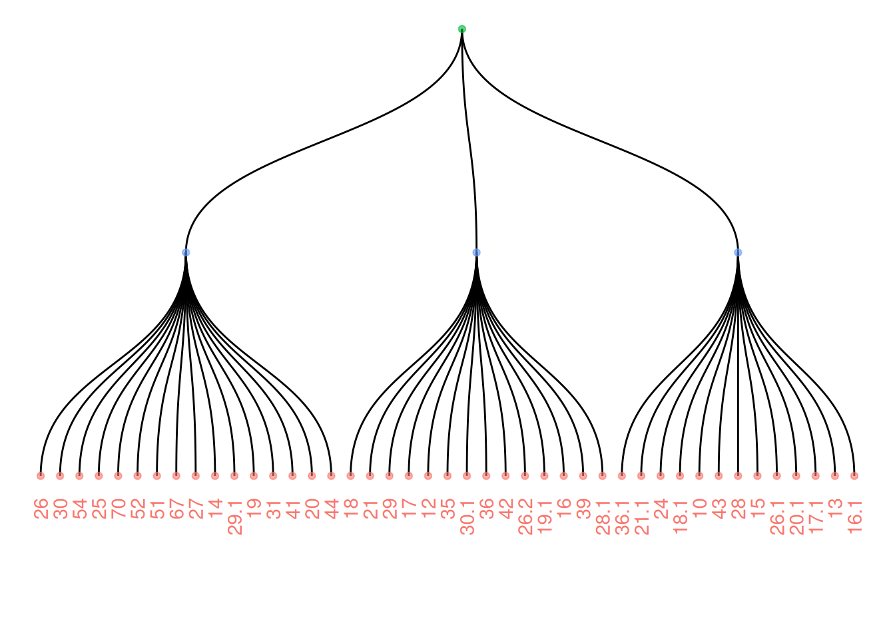
2. 交互式树状图
使用CollapsibleTree包绘制交互式树状图。
p <- collapsibleTree(warpbreaks, c("wool", "tension", "breaks"))
p交互式树状图
此图通过将 warpbreaks 数据集按 “wool”（羊毛类型）、“tension”（张力）和 “breaks”（断裂次数）这三个变量的层级结构可视化，形成一个可交互的树状图。图中的每个节点代表一个层次，用户可以点击展开或折叠不同的节点，从而查看该层次下的数据汇总。此图形可以帮助用户理解层级数据的分布和各层之间的关系，适用于展示具有多层次结构的数据。
3. 聚类树状图
使用R自带的hclust()函数绘图。
输入数据集通常是一个矩阵，其中每一行代表一个样本，每一列代表一个变量。如果需要，可以使用
t()函数对矩阵进行转置，以便让行和列交换。层次聚类是在一个方阵（样本 x 样本矩阵）上进行的，这个方阵描述了样本之间的相似性或距离。计算这些距离可以使用
dist()函数（用于欧几里得距离）或cor()函数（用于相关性）等，具体选择哪个函数取决于你的问题和数据的特点。然后，使用
hclust()函数来执行层次聚类，得到一个聚类结果。最后，你可以使用plot()函数将聚类结果可视化，以便查看树状图，并根据需要进行一些自定义设置。
层次聚类的原理如下：首先，计算样本之间的距离（或相似性）。接着，找到两个样本之间的最小距离。将这两个样本合并成一个簇。使用这两个物体的“重心”来代表新形成的簇。然后，继续重复这一过程，直到所有物体都被合并成一个最终的簇。在计算两个簇之间的距离时，可以采用不同的方法：比如使用簇中两个点之间的最大距离、最小距离、平均距离，或者使用 Ward 方法（默认）。不同的距离计算方式会影响聚类结果。
3.1 基本树状图
plot(cluster_result, main = "Hierarchical Clustering of TCGA-BRCA Samples",
xlab = "Samples", ylab = "Height", sub = "", cex = 0.8)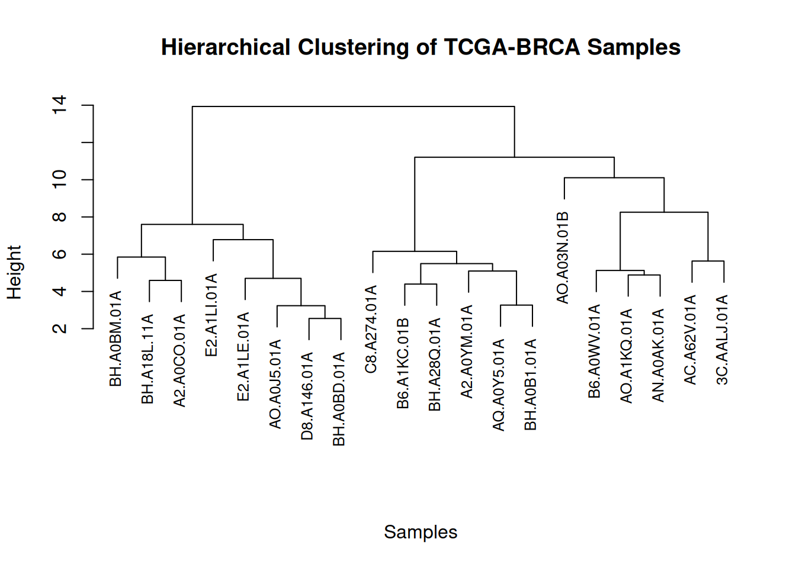
此图展示了TCGA-BRCA样本基因表达水平之间的相似性和聚类结构。
3.2 放大群组
可以放大树的特定部分。使用[[..]]运算符选择感兴趣的组。
dhc <- as.dendrogram(cluster_result)
par(mar = c(8, 4, 4, 2))
plot(dhc[[2]], main = "Zoom on a Part of the Dendrogram")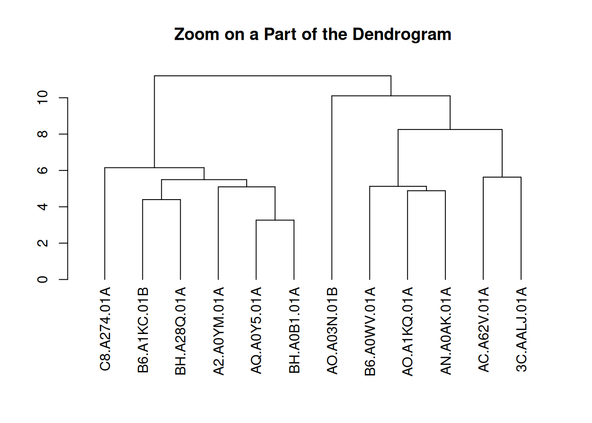
这个图展示了TCGA-BRCA样本基因表达水平层次聚类结果的一个局部视图。通过将聚类树状图的第二部分提取出来，图中显示了某一层级的聚类结构。该部分有助于深入观察样本之间的相似性和聚类过程，特别是对于某些特定簇的细节。
3.3 颜色与图例
par(mar = c(8, 4, 4, 2))
plot(brca_dend, main = "Hierarchical Clustering of TCGA-BRCA Samples", xlab = "", ylab = "", sub = "", cex = 0.8)
legend("topright",
legend = c("Tumor (A)", "Normal (B)"),
col = c("red", "blue"),
pch = 20,
bty = "n",
pt.cex = 1.5,
cex = 0.8,
text.col = "black",
horiz = FALSE,
inset = c(0, 0.1)) # 添加图例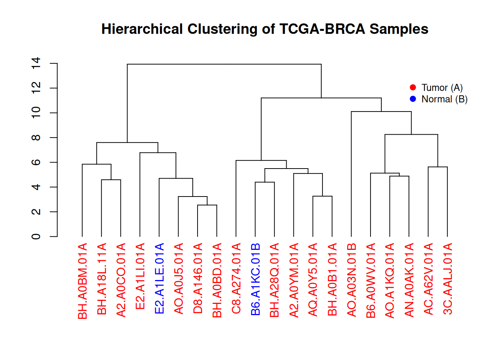
这个图展示了TCGA-BRCA样本基因表达水平的层次聚类结果。通过树状图，可以直观地观察到不同样本之间的相似性，并且根据颜色标记（红色代表肿瘤样本，蓝色代表正常样本），我们可以看到肿瘤和正常样本在聚类中的分布情况。图例提供了颜色与样本类型之间的对应关系，有助于理解聚类过程中样本的分类。
4. dendextend包
使用dendextend包绘制聚类树状图。
首先，我们回顾一下如何在基础R中构建树状图：
输入的数据集通常是一个数据框，其中每一行代表一个样本，每一列代表一个特征。
使用
dist()函数计算样本之间的距离，通常使用欧几里得距离或其他适合的数据类型的距离度量。hclust()函数用于执行层次聚类，将样本按相似性进行分组。
最后，使用plot()函数将聚类结果可视化，直接绘制出层次树状图，帮助我们直观地查看样本之间的聚类关系。
4.1 基本树状图
par(mar=c(7,3,1,1))
plot(mtcars_dend)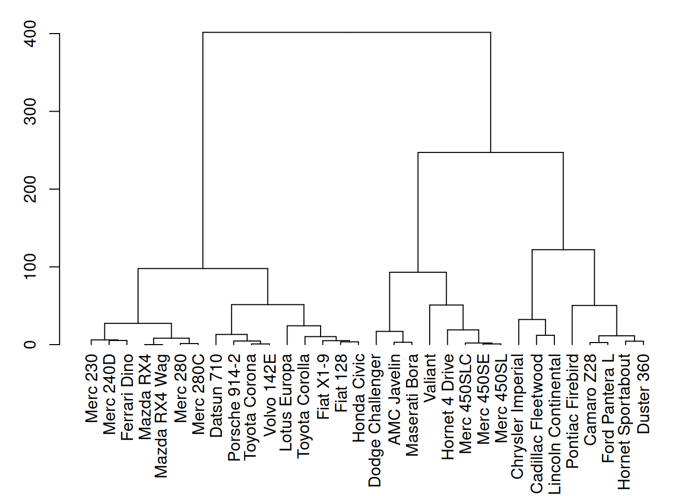
这个图展示了mtcars数据集中三个变量（mpg、cyl、disp）的层次聚类结果。通过聚类分析，图中树状图清晰地展示了不同汽车样本之间的相似性。
4.2 自定义树状图
# 左图
mtcars_dend %>%
# 自定义枝干
set("branches_col", "grey") %>% set("branches_lwd", 3) %>%
# 自定义叶
set("labels_col", "orange") %>% set("labels_cex", 0.8) %>%
plot()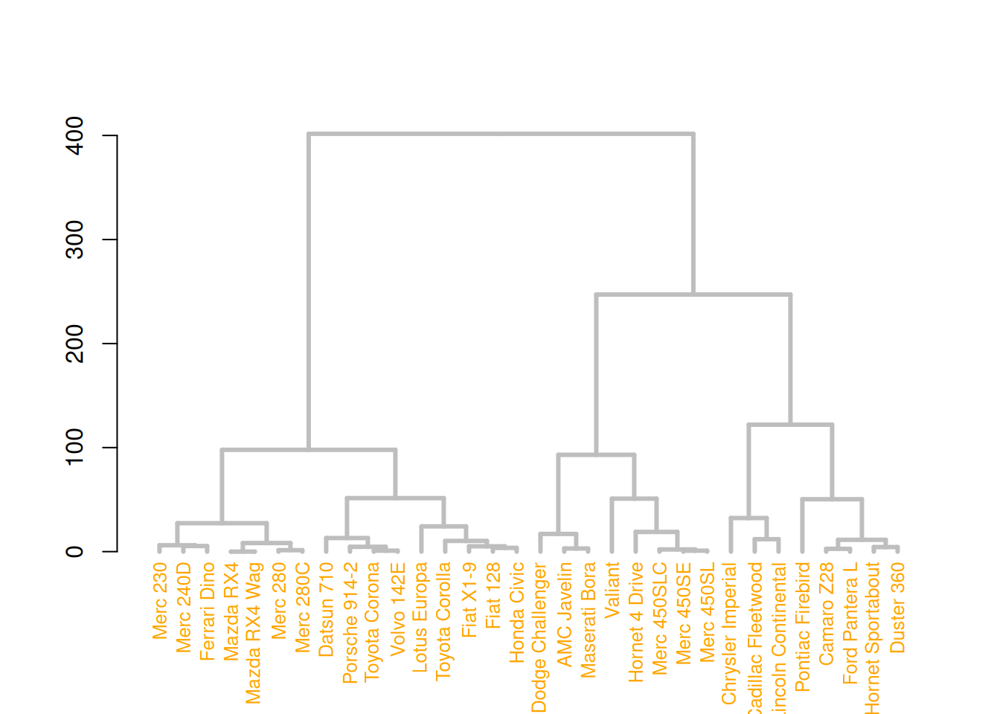
# 中图
mtcars_dend %>%
set("nodes_pch", 19) %>%
set("nodes_cex", 0.7) %>%
set("nodes_col", "orange") %>%
plot()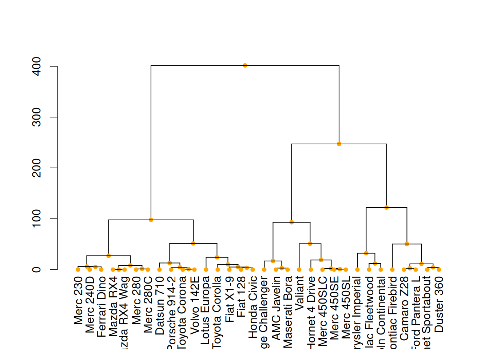
# 右图
mtcars_dend %>%
set("leaves_pch", 19) %>%
set("leaves_cex", 0.7) %>%
set("leaves_col", "skyblue") %>%
plot()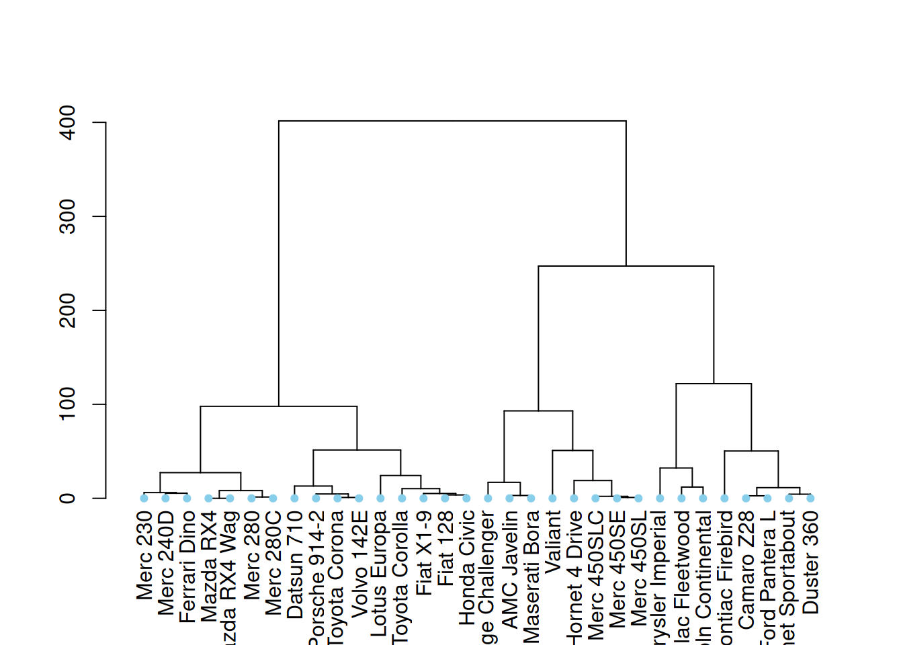
这三个图展示了不同的树状图定制方式，通过修改树枝、节点和叶子的颜色、大小和形状来增强图形的视觉效果。
4.3 突出显示群集
dendextend具有一些很好的功能来突出显示树簇。可以根据其集群属性对分支进行着色和标记，指定所需的集群数量。rect.dendrogram()函数甚至允许使用矩形突出显示一个或多个特定集群。
par(mar=c(1,1,1,8))
mtcars_dend %>%
set("labels_col", value = c("skyblue", "orange", "grey"), k=3) %>%
set("branches_k_color", value = c("skyblue", "orange", "grey"), k = 3) %>%
plot(horiz=TRUE, axes=FALSE)
abline(v = 350, lty = 2)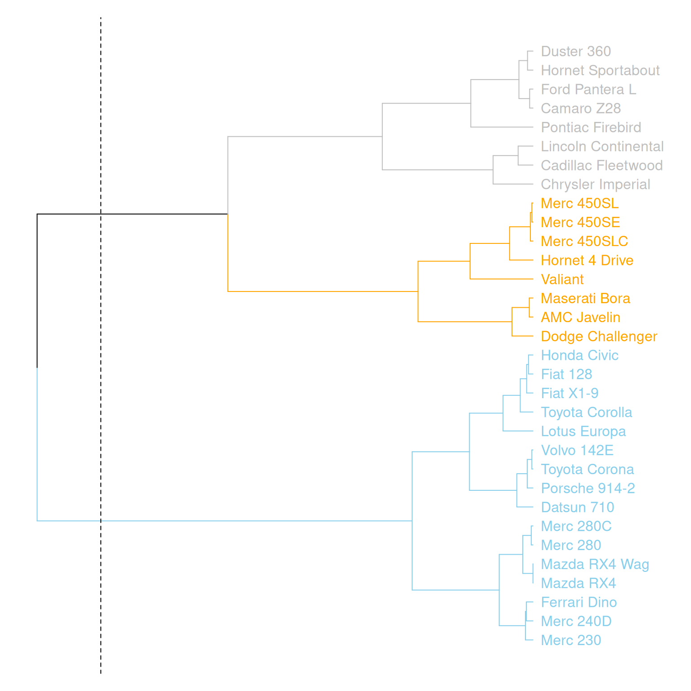
这个图水平展示了mtcars数据集中三个变量（mpg、cyl、disp）的层次聚类结果，通过不同的颜色区分了不同的聚类簇，并通过虚线标记了一个特定的聚类位置。
# 用矩形突出显示
par(mar=c(9,1,1,1))
mtcars_dend %>%
set("labels_col", value = c("skyblue", "orange", "grey"), k=3) %>%
set("branches_k_color", value = c("skyblue", "orange", "grey"), k = 3) %>%
plot(axes=FALSE)
rect.dendrogram( mtcars_dend, k=3, lty = 5, lwd = 0, x=1, col=rgb(0.1, 0.2, 0.4, 0.1) ) 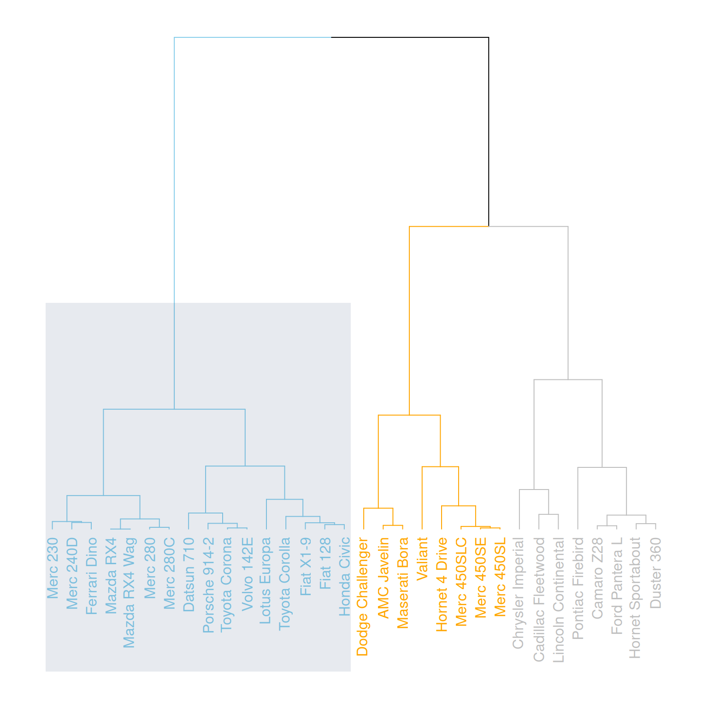
这个图水平展示了mtcars数据集中三个变量（mpg、cyl、disp）的层次聚类结果，通过用矩形突出显示特定的类别。
4.4 与预期聚类进行比较
将获得的聚类与预期分布进行比较是一项常见任务。在mtcars中，am列是二进制变量。我们可以使用colored_bars()函数检查此变量是否与我们获得的聚类一致。
my_colors <- ifelse(mtcars$am==0, "forestgreen", "green")
par(mar=c(10,1,1,1))
mtcars_dend %>%
set("labels_col", value = c("skyblue", "orange", "grey"), k=3) %>%
set("branches_k_color", value = c("skyblue", "orange", "grey"), k = 3) %>%
set("leaves_pch", 19) %>%
set("nodes_cex", 0.7) %>%
plot(axes=FALSE)
colored_bars(colors = my_colors, dend = mtcars_dend, rowLabels = "am")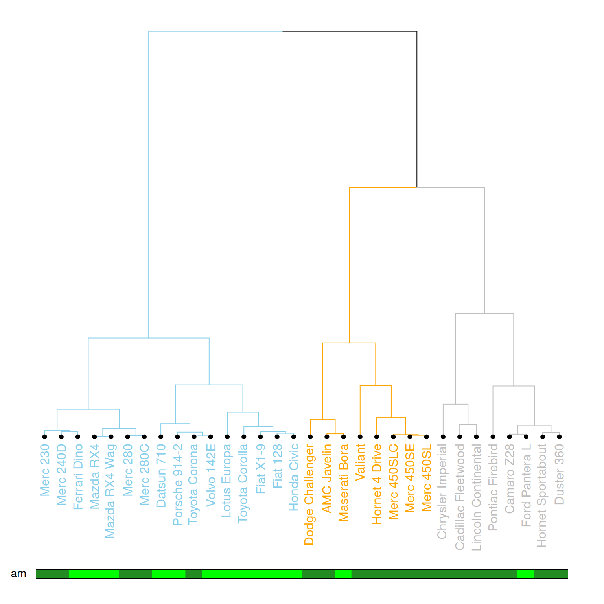
这个图展示了基于层次聚类的树状图，样本（数据点）被分为不同的簇，并通过不同的颜色和样式进行标记。树状图的叶节点使用了不同的颜色，分别表示mtcars数据集中的am变量的不同值（0或1），并且对每个节点的标记、分支颜色等进行了定制。图中通过彩色条形图进一步强调了每个样本的类别（am）。
4.5 比较2个树状图
可以使用 tanglegram() 函数比较两个树状图。当计算距离矩阵并运行层次聚类时，不能仅仅依赖默认选项，需要根据具体的需求进行选择。不同的聚类方法会产生不同的结果，因此了解并比较各种方法之间的差异是非常重要的。
# 使用两种聚类方法
d1 <- USArrests %>% dist() %>% hclust( method="average" ) %>% as.dendrogram()
d2 <- USArrests %>% dist() %>% hclust( method="complete" ) %>% as.dendrogram()
dl <- dendlist(
d1 %>%
set("labels_col", value = c("skyblue", "orange", "grey"), k=3) %>%
set("branches_lty", 1) %>%
set("branches_k_color", value = c("skyblue", "orange", "grey"), k = 3),
d2 %>%
set("labels_col", value = c("skyblue", "orange", "grey"), k=3) %>%
set("branches_lty", 1) %>%
set("branches_k_color", value = c("skyblue", "orange", "grey"), k = 3)
)
# 合并绘图
tanglegram(dl,
common_subtrees_color_lines = FALSE, highlight_distinct_edges = TRUE, highlight_branches_lwd=FALSE,
margin_inner=7,
lwd=2
)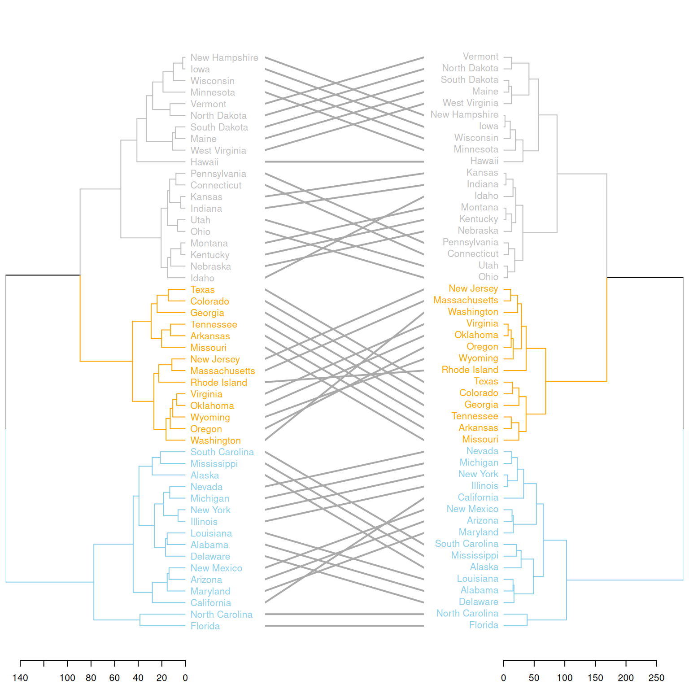
这个图展示了两种不同的聚类方法对同一数据集（USArrests）的聚类结果进行比较。通过使用dendlist()将两个层次聚类树（d1 和 d2）合并为一个图，并通过tanglegram()函数展示这两个聚类树之间的差异。图中突出了不同的聚类分支，并通过颜色区分了两个方法在聚类过程中的不同划分。这样，可以直观地看到两种方法在聚类结果上的不同，并帮助用户理解它们的区别。
应用场景
1. 基础树状图
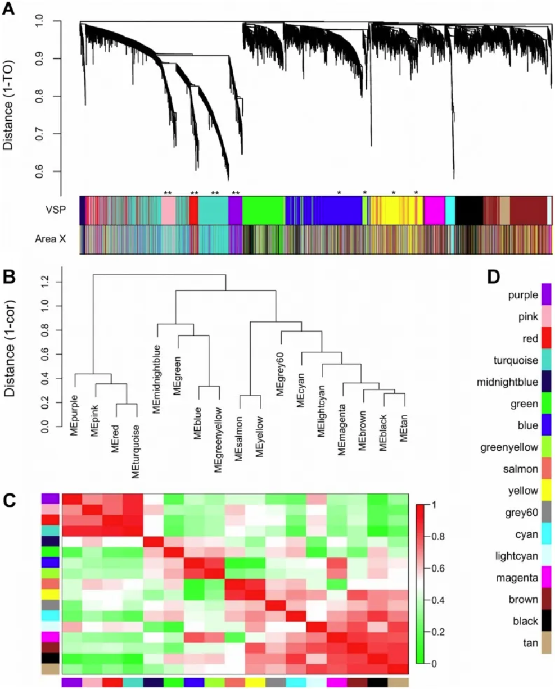
基因共表达模块和元模块。A） 树状图显示了 VSP 中分层聚类基因的结果。沿枝干的叶子代表基因探针。y 轴表示由 1 – 拓扑重叠 （TO） 确定的网络距离，其中接近 0 的值表示样本之间探针表达谱的相似性更高。下面的色块表示 VSP（顶部）和区域 X（底部）中探针在每个区域中分配到的模块。区域 X 模块颜色设置为尽可能与 VSP 颜色匹配，因此在 2 个波段中匹配的色块表示 VSP 模块保留在区域 X 中（例如粉色、红色、绿松石色、紫色）。未保存的模块：蓝色、绿黄色、黄色和鲑鱼色。（B） 树状图显示了分层聚类 VSP 模块特征基因 （MEs） 的结果，以检查模块之间的高阶关系。沿枝干的叶子代表 ME。y 轴表示由 1 – 相关性确定的网络距离，其中接近 0 的值表示模块中表达扰动的主要来源之间的相似性更高。（C） 表示 VSP ME 之间相关性的热图。每行/列代表一个 ME，由 x 轴和 y 轴上的模块色块表示。深红色表示强正相关，深绿色表示强负相关，白色表示无相关性，如色标尺所示。对角线上的单元格是深红色的，因为每个 ME 都与自身完美相关。（D） 所有 VSP 模块的颜色键。在后续图中使用相同的颜色。 [1]
2. 与预期聚类进行比较
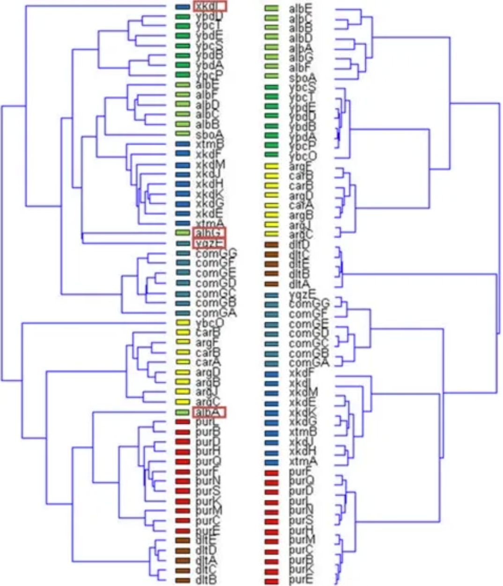
应用于表达矩阵（左）和标准化相关性矩阵（图 3B）（右）的树状图算法的无监督结果。属于同一操纵子的基因用相同颜色标记。请注意，四个错配仅发生在标准化相关性矩阵（左）中。 [2]
3. 圆形树状图
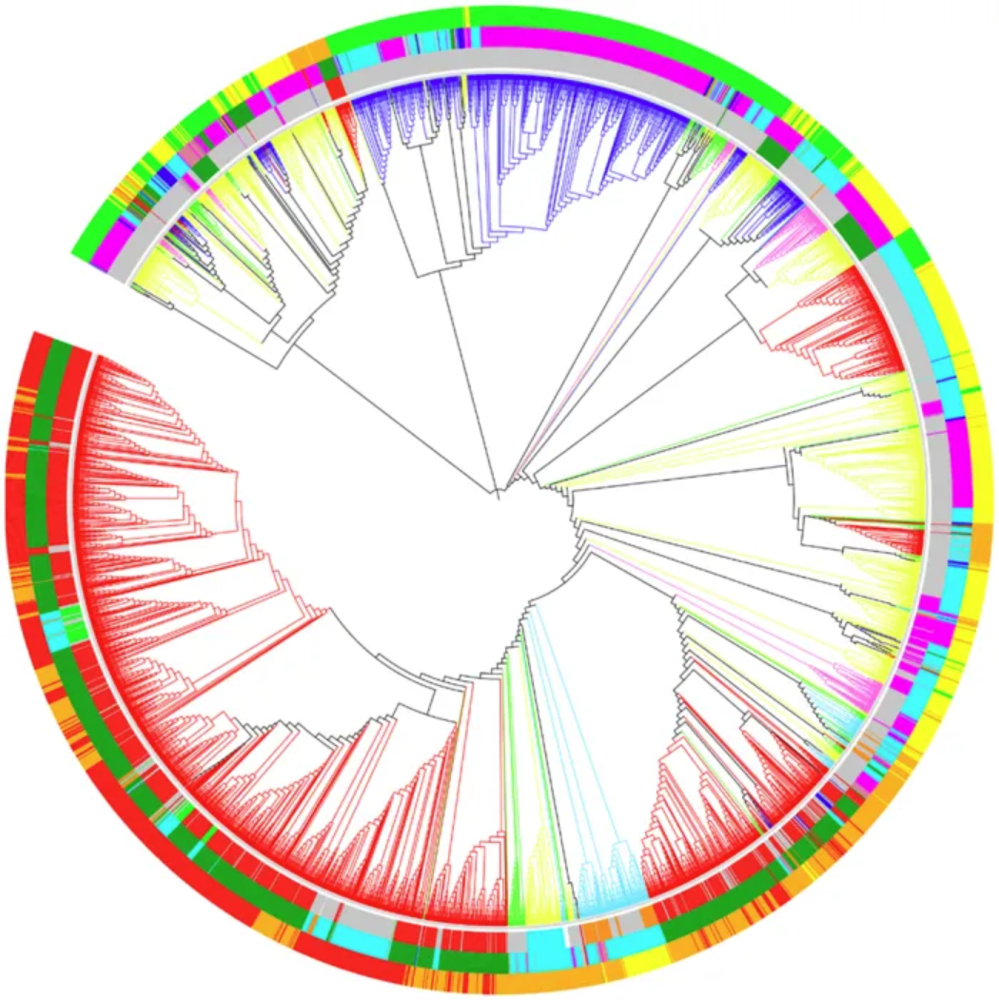
3,905 个 RefSeq 病毒基因组的最佳树状图 （k = 9）。支系由巴尔的摩分类着色。圆圈从内到外按不同的顺序、宿主和基因组大小着色，如下所示：按巴尔的摩分类的牧场：dsDNA（无 RNA 阶段），红色;dsRNA，绿色;RT 病毒，粉红色;ssDNA，蓝色;ssRNA 负链，亮蓝色;ssRNA 正链，黄色。第一个圆圈，从内到外，按顺序排列：Caudovirales，红色;疱疹病毒属，绿色;Ligamenvirales，蓝色;Mononegavirales，橙色;Nidovirales，青色：Picornavirales，粉红色;Tymovirales，深绿色;未分类，银色。第二个圆圈，由内到外，按宿主排列：原生生物，橙色;古细菌，红色;细菌，深绿色;真菌，蓝色;动物，青色;动植物，淡紫红色;植物，粉红色;环境或 NA、银。第三个圆圈，从内到外，按基因组大小排列：Q1，绿色;Q2，黄色;Q3，橙色;Q4，红色。 [3]
参考文献
[1] Hilliard AT, Miller JE, Horvath S, White SA. Distinct neurogenomic states in basal ganglia subregions relate differently to singing behavior in songbirds. PLoS Comput Biol. 2012;8(11):e1002773. doi: 10.1371/journal.pcbi.1002773. Epub 2012 Nov 8. PMID: 23144607; PMCID: PMC3493463.
[2] Madi A, Friedman Y, Roth D, Regev T, Bransburg-Zabary S, Ben Jacob E. Genome holography: deciphering function-form motifs from gene expression data. PLoS One. 2008 Jul 16;3(7):e2708. doi: 10.1371/journal.pone.0002708. PMID: 18628959; PMCID: PMC2444029.
[3] Zhang Q, Jun SR, Leuze M, Ussery D, Nookaew I. Viral Phylogenomics Using an Alignment-Free Method: A Three-Step Approach to Determine Optimal Length of k-mer. Sci Rep. 2017 Jan 19;7:40712. doi: 10.1038/srep40712. PMID: 28102365; PMCID: PMC5244389.
[4] ggraph: Grammar of Graphs for ggplot2. https://cran.r-project.org/web/packages/ggraph/index.html
[5] igraph: Network Analysis and Visualization. https://cran.r-project.org/web/packages/igraph/index.html
[6] tidyverse: Easily Install and Load the ‘Tidyverse’. https://cran.r-project.org/web/packages/tidyverse/index.html
[7] CollapsibleTree: Interactive Hierarchical Tree Plots. https://cran.r-project.org/web/packages/CollapsibleTree/index.html
[8] dendextend: Extensions to Dendrogram Class. https://cran.r-project.org/web/packages/dendextend/index.html